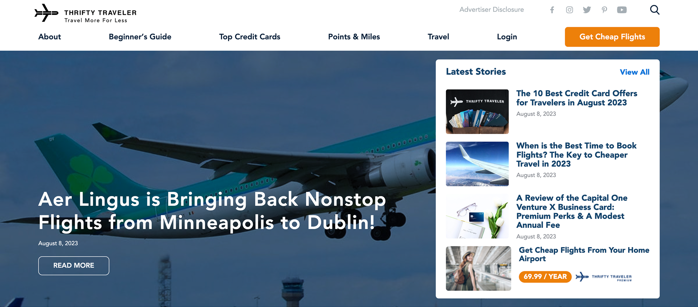
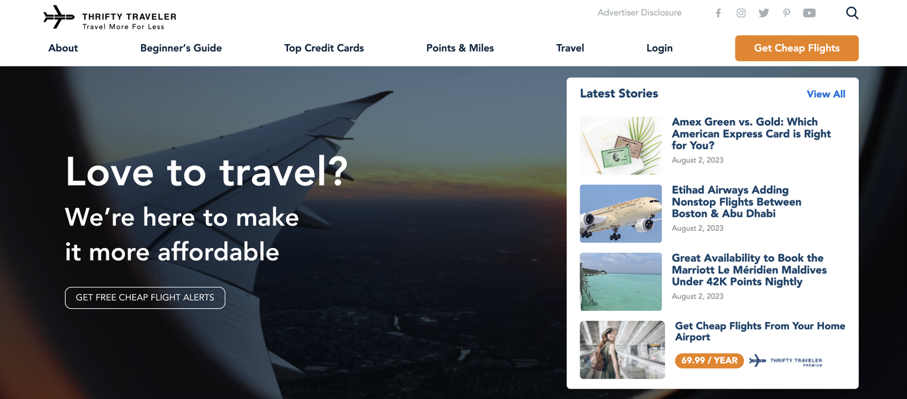
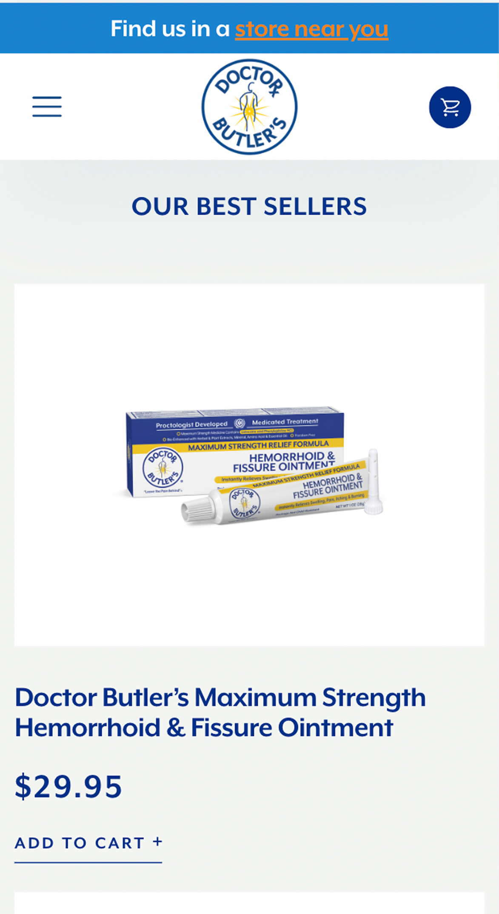
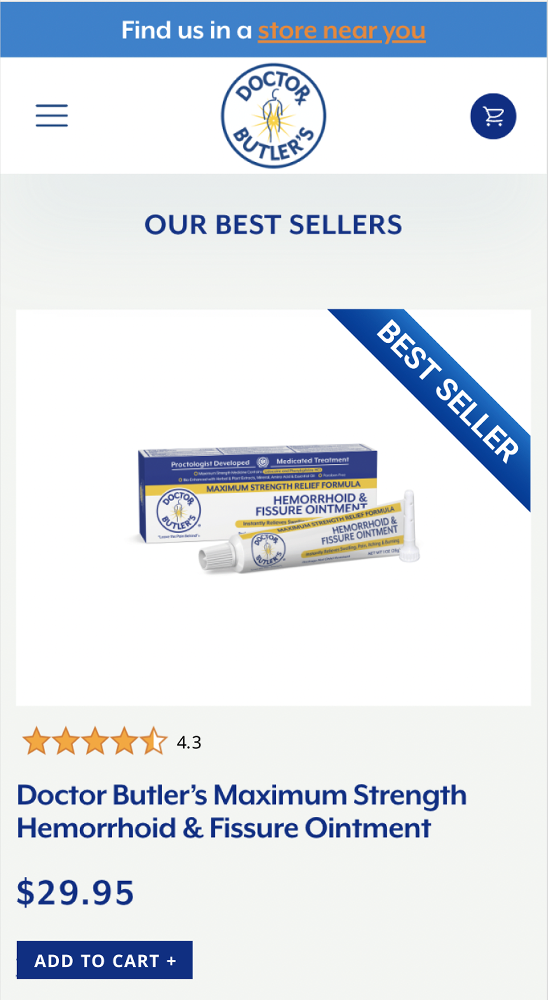
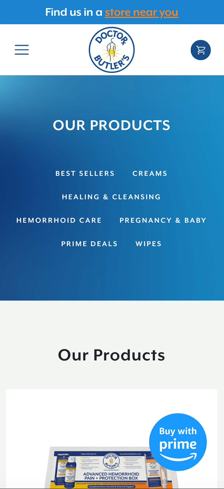
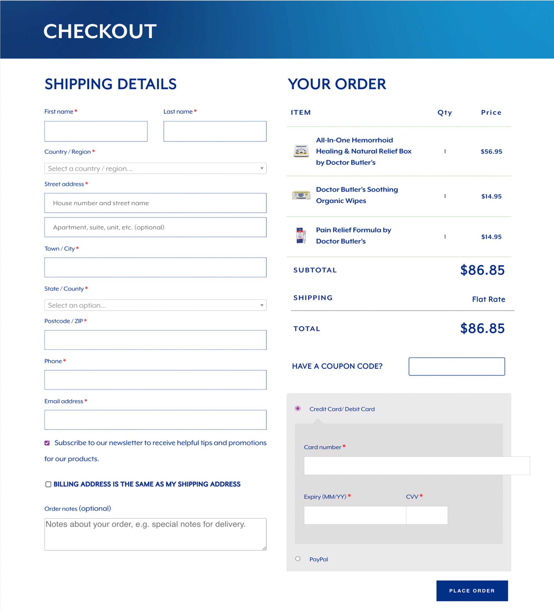

Data-Driven Design Execution
Tools: Figma, ClickUp
I worked as a UX Designer at Experiment Zone, a conversion rate optimization consultancy, where I translated data insights into precise design specifications for clients across commerce, travel, and construction industries. The role focused on rapid design execution that directly supported measurable business outcomes through systematic A/B testing initiatives.
The work demanded speed and accuracy. Clients needed design specifications that could immediately enter testing and development cycles. Each project required quickly internalizing brand guidelines, understanding the testing rationale, and producing developer-ready assets that maintained brand integrity while supporting conversion goals.
Process
I'd receive briefs explaining the A/B testing hypothesis - whether we were testing badge placement to improve product discoverability, restructuring checkout flows to reduce abandonment, or optimizing CTA hierarchy to increase conversions.
The design process involved rapidly familiarizing myself with each client's brand system, understanding their user flow constraints, and creating Figma specifications detailed enough that developers could implement without additional clarification. This meant documenting exact spacing values, typography scales, color codes, responsive breakpoints, and interaction states.
Takeaways
This experience provided invaluable exposure to how design decisions directly correlate with business metrics. While my role was execution-focused, observing the A/B testing process and understanding the rationale behind optimization strategies gave me insight into data-driven design methodology that informs my approach to user research and experience design.






